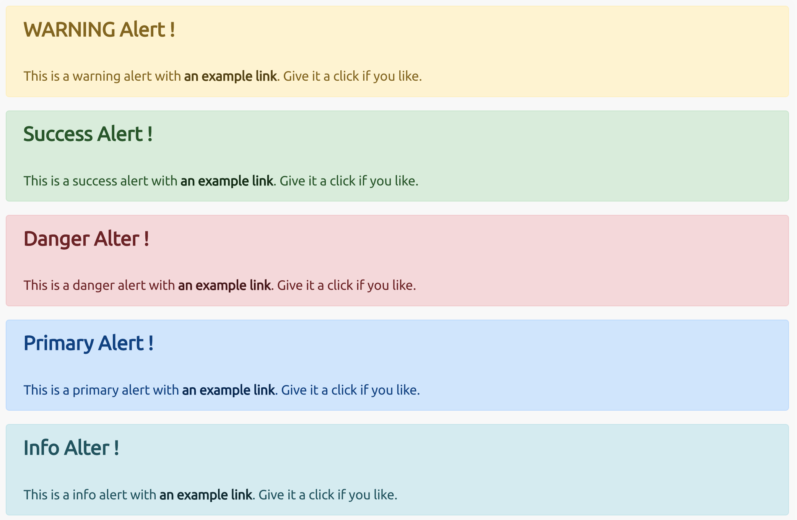

Table of Contents generated with DocToc
bootstrap
using boostrap sytles
[!NOTE|style:callout]
bootstrap 4.x
<head> <link href="https://getbootstrap.com/docs/4.0/assets/css/docs.min.css" rel="stylesheet" id="bootstrap-css"> <link href="https://maxcdn.bootstrapcdn.com/bootstrap/4.0.0/css/bootstrap.min.css" rel="stylesheet" id="bootstrap-css"> <script src="https://maxcdn.bootstrapcdn.com/bootstrap/4.0.0/js/bootstrap.min.js"></script> <script src="https://cdnjs.cloudflare.com/ajax/libs/jquery/3.2.1/jquery.min.js"></script> </head><head> <meta charset="utf-8"> <meta name="viewport" content="width=device-width, initial-scale=1"> <!-- Bootstrap CSS --> <link href="https://cdn.jsdelivr.net/npm/bootstrap@5.2.2/dist/css/bootstrap.min.css" rel="stylesheet" integrity="sha384-EVSTQN3/azprG1Anm3QDgpJLIm9Nao0Yz1ztcQTwFspd3yD65VohhpuuCOmLASjC" crossorigin="anonymous"> </head> <body> <!-- Bootstrap JS Bundle with Popper --> <script src="https://cdn.jsdelivr.net/npm/bootstrap@5.0.2/dist/js/bootstrap.bundle.min.js" integrity="sha384-MrcW6ZMFYlzcLA8Nl+NtUVF0sA7MsXsP1UyJoMp4YLEuNSfAP+JcXn/tWtIaxVXM" crossorigin="anonymous"></script> </body>
4.x
<!doctype html> <html lang="en"> <head> <!-- Required meta tags --> <meta charset="utf-8"> <meta name="viewport" content="width=device-width, initial-scale=1, shrink-to-fit=no"> <!-- Bootstrap CSS --> <link rel="stylesheet" href="https://cdn.jsdelivr.net/npm/bootstrap@4.0.0/dist/css/bootstrap.min.css" integrity="sha384-Gn5384xqQ1aoWXA+058RXPxPg6fy4IWvTNh0E263XmFcJlSAwiGgFAW/dAiS6JXm" crossorigin="anonymous"> <title>Hello, world!</title> </head> <body> <h1>Hello, world!</h1> <!-- Optional JavaScript --> <!-- jQuery first, then Popper.js, then Bootstrap JS --> <script src="https://code.jquery.com/jquery-3.2.1.slim.min.js" integrity="sha384-KJ3o2DKtIkvYIK3UENzmM7KCkRr/rE9/Qpg6aAZGJwFDMVNA/GpGFF93hXpG5KkN" crossorigin="anonymous"></script> <script src="https://cdn.jsdelivr.net/npm/popper.js@1.12.9/dist/umd/popper.min.js" integrity="sha384-ApNbgh9B+Y1QKtv3Rn7W3mgPxhU9K/ScQsAP7hUibX39j7fakFPskvXusvfa0b4Q" crossorigin="anonymous"></script> <script src="https://cdn.jsdelivr.net/npm/bootstrap@4.0.0/dist/js/bootstrap.min.js" integrity="sha384-JZR6Spejh4U02d8jOt6vLEHfe/JQGiRRSQQxSfFWpi1MquVdAyjUar5+76PVCmYl" crossorigin="anonymous"></script> </body> </html>5.x
<!DOCTYPE html> <html lang="en"> <head> <meta charset="utf-8"> <meta name="viewport" content="width=device-width, initial-scale=1"> <title>original bootstrap 5.x alert</title> <!-- Bootstrap CSS --> <link href="https://cdn.jsdelivr.net/npm/bootstrap@5.0.2/dist/css/bootstrap.min.css" rel="stylesheet" integrity="sha384-EVSTQN3/azprG1Anm3QDgpJLIm9Nao0Yz1ztcQTwFspd3yD65VohhpuuCOmLASjC" crossorigin="anonymous"> </head> <body> <h1>Hello, world!</h1> <!-- Bootstrap JS Bundle with Popper --> <script src="https://cdn.jsdelivr.net/npm/bootstrap@5.0.2/dist/js/bootstrap.bundle.min.js" integrity="sha384-MrcW6ZMFYlzcLA8Nl+NtUVF0sA7MsXsP1UyJoMp4YLEuNSfAP+JcXn/tWtIaxVXM" crossorigin="anonymous"></script> </body> </html>
alert
bootstrap alert
bootstrap alert 4.x 
bootstrap alert 5.x

.alert{ --bs-alert-bg:transparent;--bs-alert-padding-x:1rem;--bs-alert-padding-y:1rem;--bs-alert-margin-bottom:1rem;--bs-alert-color:inherit;--bs-alert-border-color:transparent;--bs-alert-border:1px solid var(--bs-alert-border-color);--bs-alert-border-radius:0.375rem;position:relative;padding:var(--bs-alert-padding-y) var(--bs-alert-padding-x);margin-bottom:var(--bs-alert-margin-bottom);color:var(--bs-alert-color);background-color:var(--bs-alert-bg);border:var(--bs-alert-border);border-radius:var(--bs-alert-border-radius) } .alert-heading{ color:inherit } .alert-link{ font-weight:700 } .fade{ transition:opacity .15s linear } .fade:not(.show){ opacity:0 } .btn-close{ box-sizing:content-box;width:1em;height:1em;padding:.25em .25em;color:#000;background:transparent url("data:image/svg+xml,%3csvg xmlns='http://www.w3.org/2000/svg' viewBox='0 0 16 16' fill='%23000'%3e%3cpath d='M.293.293a1 1 0 0 1 1.414 0L8 6.586 14.293.293a1 1 0 1 1 1.414 1.414L9.414 8l6.293 6.293a1 1 0 0 1-1.414 1.414L8 9.414l-6.293 6.293a1 1 0 0 1-1.414-1.414L6.586 8 .293 1.707a1 1 0 0 1 0-1.414z'/%3e%3c/svg%3e") center/1em auto no-repeat;border:0;border-radius:.375rem;opacity:.5 } .btn-close:hover{ color:#000;text-decoration:none;opacity:.75 } .btn-close:focus{ outline:0;box-shadow:0 0 0 .25rem rgba(13,110,253,.25);opacity:1 } .btn-close.disabled,.btn-close:disabled{ pointer-events:none;-webkit-user-select:none;-moz-user-select:none;user-select:none;opacity:.25 } .btn-close-white{ filter:invert(1) grayscale(100%) brightness(200%) } .alert-dismissible{ padding-right:3rem } .alert-dismissible .btn-close{ position:absolute;top:0;right:0;z-index:2;padding:1.25rem 1rem } .alert-primary{ --bs-alert-color:#084298;--bs-alert-bg:#cfe2ff;--bs-alert-border-color:#b6d4fe } .alert-primary .alert-link{ color:#06357a } .alert-secondary{ --bs-alert-color:#41464b;--bs-alert-bg:#e2e3e5;--bs-alert-border-color:#d3d6d8 } .alert-secondary .alert-link{ color:#34383c } .alert-success{ --bs-alert-color:#0f5132;--bs-alert-bg:#d1e7dd;--bs-alert-border-color:#badbcc } .alert-success .alert-link{ color:#0c4128 } .alert-info{ --bs-alert-color:#055160;--bs-alert-bg:#cff4fc;--bs-alert-border-color:#b6effb } .alert-info .alert-link{ color:#04414d } .alert-warning{ --bs-alert-color:#664d03;--bs-alert-bg:#fff3cd;--bs-alert-border-color:#ffecb5 } .alert-warning .alert-link{ color:#523e02 } .alert-danger{ --bs-alert-color:#842029;--bs-alert-bg:#f8d7da;--bs-alert-border-color:#f5c2c7 } .alert-danger .alert-link{ color:#6a1a21 } .alert-light{ --bs-alert-color:#636464;--bs-alert-bg:#fefefe;--bs-alert-border-color:#fdfdfe } .alert-light .alert-link{ color:#4f5050 } .alert-dark{ --bs-alert-color:#141619;--bs-alert-bg:#d3d3d4;--bs-alert-border-color:#bcbebf } .alert-dark .alert-link{ color:#101214 }
- template
<div style="--bs-alert-bg:transparent;--bs-alert-padding-x:1rem;--bs-alert-padding-y:1rem;--bs-alert-margin-bottom:1rem;--bs-alert-color:inherit;--bs-alert-border-color:transparent;--bs-alert-border:1px solid var(--bs-alert-border-color);--bs-alert-border-radius:0.375rem;position:relative;padding:var(--bs-alert-padding-y) var(--bs-alert-padding-x);margin-bottom:var(--bs-alert-margin-bottom);color:var(--bs-alert-color);background-color:var(--bs-alert-bg);border:var(--bs-alert-border);border-radius:var(--bs-alert-border-radius); padding-right:3rem;"> <h4 style="color:inherit; margin-top:0;margin-bottom:.5rem;font-weight:500;line-height:1.2">X Alert !</h4> This is a x alert with <a href="#" style="font-weight:700">an example link</a>. Give it a click if you like. </div>
:root{ --bs-blue:#0d6efd; --bs-indigo:#6610f2; --bs-purple:#6f42c1; --bs-pink:#d63384; --bs-red:#dc3545; --bs-orange:#fd7e14; --bs-yellow:#ffc107; --bs-green:#198754; --bs-teal:#20c997; --bs-cyan:#0dcaf0; --bs-black:#000; --bs-white:#fff; --bs-gray:#6c757d; --bs-gray-dark:#343a40; --bs-gray-100:#f8f9fa; --bs-gray-200:#e9ecef; --bs-gray-300:#dee2e6; --bs-gray-400:#ced4da; --bs-gray-500:#adb5bd; --bs-gray-600:#6c757d; --bs-gray-700:#495057; --bs-gray-800:#343a40; --bs-gray-900:#212529; --bs-primary:#0d6efd; --bs-secondary:#6c757d; --bs-success:#198754; --bs-info:#0dcaf0; --bs-warning:#ffc107; --bs-danger:#dc3545; --bs-light:#f8f9fa; --bs-dark:#212529; --bs-primary-rgb:13,110,253; --bs-secondary-rgb:108,117,125; --bs-success-rgb:25,135,84; --bs-info-rgb:13,202,240; --bs-warning-rgb:255,193,7; --bs-danger-rgb:220,53,69; --bs-light-rgb:248,249,250; --bs-dark-rgb:33,37,41; --bs-white-rgb:255,255,255; --bs-black-rgb:0,0,0; --bs-body-color-rgb:33,37,41; --bs-body-bg-rgb:255,255,255; --bs-font-sans-serif:system-ui,-apple-system,"Segoe UI",Roboto,"Helvetica Neue","Noto Sans","Liberation Sans",Arial,sans-serif,"Apple Color Emoji","Segoe UI Emoji","Segoe UI Symbol","Noto Color Emoji"; --bs-font-monospace:SFMono-Regular,Menlo,Monaco,Consolas,"Liberation Mono","Courier New",monospace; --bs-gradient:linear-gradient(180deg, rgba(255, 255, 255, 0.15), rgba(255, 255, 255, 0)); --bs-body-font-family:var(--bs-font-sans-serif); --bs-body-font-size:1rem; --bs-body-font-weight:400; --bs-body-line-height:1.5; --bs-body-color:#212529; --bs-body-bg:#fff; --bs-border-width:1px; --bs-border-style:solid; --bs-border-color:#dee2e6; --bs-border-color-translucent:rgba(0, 0, 0, 0.175); --bs-border-radius:0.375rem; --bs-border-radius-sm:0.25rem; --bs-border-radius-lg:0.5rem; --bs-border-radius-xl:1rem; --bs-border-radius-2xl:2rem; --bs-border-radius-pill:50rem; --bs-link-color:#0d6efd; --bs-link-hover-color:#0a58ca; --bs-code-color:#d63384; --bs-highlight-bg:#fff3cd }
.alert{ position:relative; padding:.75rem 1.25rem; margin-bottom:1rem; border:1px solid transparent; border-radius:.25rem } .alert-heading{ color:inherit } .alert-link{ font-weight:700 } .alert-dismissible{ padding-right:4rem } .alert-dismissible .close{ position:absolute; top:0; right:0; padding:.75rem 1.25rem; color:inherit } .alert-primary{ color:#004085; background-color:#cce5ff; border-color:#b8daff } .alert-primary hr{ border-top-color:#9fcdff } .alert-primary .alert-link{ color:#002752 } .alert-secondary{ color:#383d41; background-color:#e2e3e5; border-color:#d6d8db } .alert-secondary hr{ border-top-color:#c8cbcf } .alert-secondary .alert-link{ color:#202326 } .alert-success{ color:#155724; background-color:#d4edda; border-color:#c3e6cb } .alert-success hr{ border-top-color:#b1dfbb } .alert-success .alert-link{ color:#0b2e13 } .alert-info{ color:#0c5460; background-color:#d1ecf1; border-color:#bee5eb } .alert-info hr{ border-top-color:#abdde5 } .alert-info .alert-link{ color:#062c33 } .alert-warning{ color:#856404; background-color:#fff3cd; border-color:#ffeeba } .alert-warning hr{ border-top-color:#ffe8a1 } .alert-warning .alert-link{ color:#533f03 } .alert-danger{ color:#721c24; background-color:#f8d7da; border-color:#f5c6cb } .alert-danger hr{ border-top-color:#f1b0b7 } .alert-danger .alert-link{ color:#491217 } .alert-light{ color:#818182; background-color:#fefefe; border-color:#fdfdfe } .alert-light hr{ border-top-color:#ececf6 } .alert-light .alert-link{ color:#686868 } .alert-dark{ color:#1b1e21; background-color:#d6d8d9; border-color:#c6c8ca } .alert-dark hr{ border-top-color:#b9bbbe } .alert-dark .alert-link{ color:#040505 }
- template
<div style="position:relative; padding:.75rem 1.25rem; margin-bottom:1rem; border:1px solid transparent; border-radius:.25rem;"> <h4 style="color:inherit">X Alter !</h4> This is a x alert with <a href="#" style="">an example link</a>. Give it a click if you like. </div>
warning
5.x
<div style="--bs-alert-bg:transparent;--bs-alert-padding-x:1rem;--bs-alert-padding-y:1rem;--bs-alert-margin-bottom:1rem;--bs-alert-color:inherit;--bs-alert-border-color:transparent;--bs-alert-border:1px solid var(--bs-alert-border-color);--bs-alert-border-radius:0.375rem;position:relative;padding:var(--bs-alert-padding-y) var(--bs-alert-padding-x);margin-bottom:var(--bs-alert-margin-bottom);color:var(--bs-alert-color);background-color:var(--bs-alert-bg);border:var(--bs-alert-border);border-radius:var(--bs-alert-border-radius); padding-right:3rem; -bs-alert-color:#664d03;--bs-alert-bg:#fff3cd;--bs-alert-border-color:#ffecb5"> <h4 style="color:inherit; margin-top:0;margin-bottom:.5rem;font-weight:500;line-height:1.2">Warning Alert !</h4> This is a warning alert with <a href="#" style="font-weight:700; color:#523e02">an example link</a>. Give it a click if you like. </div>- original
<div class="alert alert-warning alert-dismissible fade show"> <h4 class="alert-heading">Warning Alert !</h4> This is a warning alert with <a href="#" class="alert-link">an example link</a>. Give it a click if you like. </div>
- original
4.x
<div style="position:relative; padding:.75rem 1.25rem; margin-bottom:1rem; border:1px solid transparent; border-radius:.25rem; color:#856404; background-color:#fff3cd; border-color:#ffeeba"> <h4 style="font-size: 1.5rem; color:inherit">Warning Alert !</h4> This is a warning alert with <a href="#" style="color:#533f03">an example link</a>. Give it a click if you like. </div> <!-- 5.x colors --> <div style="position:relative; padding:1rem 1rem; margin-bottom:1rem; border:1px solid transparent; border-radius:.375rem; padding-right:3rem; color:#664d03; background-color:#fff3cd; border-color:#ffecb5"> <h4 style="font-size: 1.5rem; color: #523e02; margin-top:0;margin-bottom:.5rem;font-weight:500;line-height:1.2">Warning Alert !</h4> This is a warning alert with <a href="#" style="font-weight:700; color:#523e02">an example link</a>. Give it a click if you like. </div>- original
<div class="alert alert-warning" role="alert"> <h4 class="alert-heading">Warning Alert !</h4> This is a warning alert with <a href="#" class="alert-link">an example link</a>. Give it a click if you like. </div>
- original
success
5.x
<div style="--bs-alert-bg:transparent;--bs-alert-padding-x:1rem;--bs-alert-padding-y:1rem;--bs-alert-margin-bottom:1rem;--bs-alert-color:inherit;--bs-alert-border-color:transparent;--bs-alert-border:1px solid var(--bs-alert-border-color);--bs-alert-border-radius:0.375rem;position:relative;padding:var(--bs-alert-padding-y) var(--bs-alert-padding-x);margin-bottom:var(--bs-alert-margin-bottom);color:var(--bs-alert-color);background-color:var(--bs-alert-bg);border:var(--bs-alert-border);border-radius:var(--bs-alert-border-radius); padding-right:3rem; --bs-alert-color:#0f5132;--bs-alert-bg:#d1e7dd;--bs-alert-border-color:#badbcc"> <h4 style="color:inherit; margin-top:0;margin-bottom:.5rem;font-weight:500;line-height:1.2">Success Alert !</h4> This is a success alert with <a href="#" style="font-weight:700; color:#0c4128">an example link</a>. Give it a click if you like. </div>- original
<div class="alert alert-success alert-dismissible fade show"> <h4 class="alert-heading">Success Alert !</h4> This is a success alert with <a href="#" class="alert-link">an example link</a>. Give it a click if you like. </div>
- original
4.x
<div style="position:relative; padding:.75rem 1.25rem; margin-bottom:1rem; border:1px solid transparent; border-radius:.25rem; color:#155724; background-color:#d4edda; border-color:#c3e6cb"> <h4 style="color:inherit">Success Alert !</h4> This is a success alert with <a href="#" style="color:#0b2e13">an example link</a>. Give it a click if you like. </div> <!-- 5.x color --> <div style="position:relative; padding:1rem 1rem; margin-bottom:1rem; border:1px solid transparent; border-radius:.375rem; padding-right:3rem; color:#0f5132; background-color:#d1e7dd; border-color:#badbcc"> <h4 style="font-size: 1.5rem; color: inherit; margin-top:0;margin-bottom:.5rem;font-weight:500;line-height:1.2">Success Alert !</h4> This is a success alert with <a href="#" style="font-weight:700; color:#0c4128">an example link</a>. Give it a click if you like. </div>original
<div class="alert alert-success" role="alert"> <h4 class="alert-heading">Success Alert !</h4> This is a success alert with <a href="#" class="alert-link">an example link</a>. Give it a click if you like. </div>
danger
5.x
<div style="--bs-alert-bg:transparent;--bs-alert-padding-x:1rem;--bs-alert-padding-y:1rem;--bs-alert-margin-bottom:1rem;--bs-alert-color:inherit;--bs-alert-border-color:transparent;--bs-alert-border:1px solid var(--bs-alert-border-color);--bs-alert-border-radius:0.375rem;position:relative;padding:var(--bs-alert-padding-y) var(--bs-alert-padding-x);margin-bottom:var(--bs-alert-margin-bottom);color:var(--bs-alert-color);background-color:var(--bs-alert-bg);border:var(--bs-alert-border);border-radius:var(--bs-alert-border-radius); padding-right:3rem; --bs-alert-color:#842029;--bs-alert-bg:#f8d7da;--bs-alert-border-color:#f5c2c7"> <h4 style="color:inherit; margin-top:0;margin-bottom:.5rem;font-weight:500;line-height:1.2">Danger Alert !</h4> This is a danger alert with <a href="#" style="font-weight:700; color:#6a1a21">an example link</a>. Give it a click if you like. </div>- original
<div class="alert alert-danger alert-dismissible fade show"> <h4 class="alert-heading">Danger Alert !</h4> This is a danger alert with <a href="#" class="alert-link">an example link</a>. Give it a click if you like. </div>
- original
4.x
<div style="position:relative; padding:.75rem 1.25rem; margin-bottom:1rem; border:1px solid transparent; border-radius:.25rem; color:#721c24; background-color:#f8d7da; border-color:#f5c6cb"> <h4 style="font-size: 1.5rem; color:inherit">Danger Alter !</h4> This is a danger alert with <a href="#" style="color:#491217">an example link</a>. Give it a click if you like. </div> <!-- 5.x color --> <div style="position:relative; padding:1rem 1rem; margin-bottom:1rem; border:1px solid transparent; border-radius:.375rem; color:#842029; background-color:#f8d7da; border-color:#f5c2c7"> <h4 style="font-size: 1.5rem; color:inherit; margin-top:0;margin-bottom:.5rem;font-weight:500;line-height:1.2">Danger Alert !</h4> This is a danger alert with <a href="#" style="font-weight:700; color:#6a1a21;">an example link</a>. Give it a click if you like. </div>- original
<div class="alert alert-danger" role="alert"> <h4 class="alert-heading">Danger Alert !</h4> This is a danger alert with <a href="#" class="alert-link">an example link</a>. Give it a click if you like. </div>
- original
primary
5.x
<div style="--bs-alert-bg:transparent;--bs-alert-padding-x:1rem;--bs-alert-padding-y:1rem;--bs-alert-margin-bottom:1rem;--bs-alert-color:inherit;--bs-alert-border-color:transparent;--bs-alert-border:1px solid var(--bs-alert-border-color);--bs-alert-border-radius:0.375rem;position:relative;padding:var(--bs-alert-padding-y) var(--bs-alert-padding-x);margin-bottom:var(--bs-alert-margin-bottom);color:var(--bs-alert-color);background-color:var(--bs-alert-bg);border:var(--bs-alert-border);border-radius:var(--bs-alert-border-radius); padding-right:3rem; --bs-alert-color:#084298;--bs-alert-bg:#cfe2ff;--bs-alert-border-color:#b6d4fe"> <h4 style="color:inherit; margin-top:0;margin-bottom:.5rem;font-weight:500;line-height:1.2">Primary Alert !</h4> This is a primary alert with <a href="#" style="font-weight:700; color:#06357a">an example link</a>. Give it a click if you like. </div>- original
<div class="alert alert-primary alert-dismissible fade show"> <h4 class="alert-heading">Primary Alert !</h4> This is a primary alert with <a href="#" class="alert-link">an example link</a>. Give it a click if you like. </div>
- original
4.x
<div style="position:relative; padding:.75rem 1.25rem; margin-bottom:1rem; border:1px solid transparent; border-radius:.25rem; color:#004085; background-color:#cce5ff; border-color:#b8daff"> <h4 style="font-size: 1.5rem; color:inherit">Primary Alert !</h4> This is a primary alert with <a href="#" style="color:#002752">an example link</a>. Give it a click if you like. </div> <!-- 5.x color --> <div style="position:relative; padding:1rem 1rem; margin-bottom:1rem; border:1px solid transparent; border-radius:.375rem; padding-right:3rem; color:#084298; background-color:#cfe2ff; border-color:#b6d4fe"> <h4 style="font-size: 1.5rem; color:inherit; margin-top:0;margin-bottom:.5rem;font-weight:500;line-height:1.2">Primary Alert !</h4> This is a primary alert with <a href="#" style="font-weight:700; color:#06357a">an example link</a>. Give it a click if you like. </div>- original
<div class="alert alert-primary" role="alert"> <h4 class="alert-heading">Primary Alert !</h4> This is a primary alert with <a href="#" class="alert-link">an example link</a>. Give it a click if you like. </div>
- original
info
5.x
<div style="--bs-alert-bg:transparent;--bs-alert-padding-x:1rem;--bs-alert-padding-y:1rem;--bs-alert-margin-bottom:1rem;--bs-alert-color:inherit;--bs-alert-border-color:transparent;--bs-alert-border:1px solid var(--bs-alert-border-color);--bs-alert-border-radius:0.375rem;position:relative;padding:var(--bs-alert-padding-y) var(--bs-alert-padding-x);margin-bottom:var(--bs-alert-margin-bottom);color:var(--bs-alert-color);background-color:var(--bs-alert-bg);border:var(--bs-alert-border);border-radius:var(--bs-alert-border-radius); padding-right:3rem; --bs-alert-color:#055160;--bs-alert-bg:#cff4fc;--bs-alert-border-color:#b6effb"> <h4 style="color:inherit; margin-top:0;margin-bottom:.5rem;font-weight:500;line-height:1.2">Info Alert !</h4> This is a info alert with <a href="#" style="font-weight:700; color:#04414d">an example link</a>. Give it a click if you like. </div>- original
<div class="alert alert-info alert-dismissible fade show"> <h4 class="alert-heading">Info Alert !</h4> This is a info alert with <a href="#" class="alert-link">an example link</a>. Give it a click if you like. </div>
- original
4.x
<div style="position:relative; padding:.75rem 1.25rem; margin-bottom:1rem; border:1px solid transparent; border-radius:.25rem; color:#0c5460;background-color:#d1ecf1;border-color:#bee5eb"> <h4 style="font-size: 1.5rem; color:inherit">Info Alter !</h4> This is a info alert with <a href="#" style="color:#062c33">an example link</a>. Give it a click if you like. </div> <!-- 4.x style 5.x color --> <div style="position:relative; padding:1rem 1rem; margin-bottom:1rem; border:1px solid transparent; border-radius:.375rem; padding-right:3rem; color:#055160; background-color:#cff4fc; border-color:#b6effb"> <h4 style="font-size: 1.5rem; color:inherit; margin-top:0;margin-bottom:.5rem;font-weight:500;line-height:1.2">Info Alert !</h4> This is a info alert with <a href="#" style="font-weight:700; color:#04414d">an example link</a>. Give it a click if you like. </div>- original
<div class="alert alert-info" role="alert"> <h4 class="alert-heading">Info Alert !</h4> This is a info alert with <a href="#" class="alert-link">an example link</a>. Give it a click if you like. </div>
- original
callout
- callout

.bd-callout { padding: 1.25rem; margin-top: 1.25rem; margin-bottom: 1.25rem; border: 1px solid #eee; border-left-width: .25rem; border-radius: .25rem } .bd-callout h4 { margin-top: 0; margin-bottom: .25rem } .bd-callout p:last-child { margin-bottom: 0 } .bd-callout code { border-radius: .25rem } .bd-callout+.bd-callout { margin-top: -.25rem } .bd-callout-info { border-left-color: #5bc0de } .bd-callout-info h4 { color: #5bc0de } .bd-callout-warning { border-left-color: #f0ad4e } .bd-callout-warning h4 { color: #f0ad4e } .bd-callout-danger { border-left-color: #d9534f } .bd-callout-danger h4 { color: #d9534f } .bd-callout-primary{ border-left-color: #007bff } .bd-callout-primary h4 { color: #007bff } .bd-callout-success{ border-left-color: #28a745 } .bd-callout-success h4 { color: #28a745 } .bd-callout-default{ border-left-color: #6c757d } .bd-callout-default h4 { color: #6c757d }
default
<div style="display: block; padding: 1.25rem; margin-top: 1.25rem; margin-bottom: 1.25rem; border: 1px solid #eee; border-left-width: 0.25rem; border-radius: 0.25rem; border-left-color: #6c757d;"> <h4 style="margin-top: 0; margin-bottom: 0.25rem; color: #6c757d;">Default Callout</h4> This is a default callout. </div>- original
<div class="bd-callout bd-callout-default"> <h4>Default Callout</h4> This is a default callout. </div>
- original
primary
<div style="display: block; padding: 1.25rem; margin-top: 1.25rem; margin-bottom: 1.25rem; border: 1px solid #eee; border-left-width: .25rem; border-radius: .25rem; border-left-color: #007bff"> <h4 style="margin-top: 0; margin-bottom: 0.25rem; color: #007bff">Primary Callout</h4> This is a primary callout. </div>- original
<div class="bd-callout bd-callout-primary"> <h4>Primary Callout</h4> This is a primary callout. </div>
- original
warning
<div style="display: block; padding: 1.25rem; margin-top: 1.25rem; margin-bottom: 1.25rem; border: 1px solid #eee; border-left-width: .25rem; border-radius: .25rem; border-left-color: #f0ad4e"> <h4 style="margin-top: 0; margin-bottom: 0.25rem; color: #f0ad4e">Warning Callout</h4> This is a warning callout. </div>- original
<div class="bd-callout bd-callout-warning"> <h4>Warning Callout</h4> This is a warning callout. </div>
- original
danger
<div style="display: block; padding: 1.25rem; margin-top: 1.25rem; margin-bottom: 1.25rem; border: 1px solid #eee; border-left-width: .25rem; border-radius: .25rem; border-left-color: #d9534f"> <h4 style="margin-top: 0; margin-bottom: 0.25rem; color: #d9534f">Danger Callout</h4> This is a danger callout. </div>- original
<div class="bd-callout bd-callout-danger"> <h4>Danger Callout</h4> This is a danger callout. </div>
- original
succeed
<div style="display: block; padding: 1.25rem; margin-top: 1.25rem; margin-bottom: 1.25rem; border: 1px solid #eee; border-left-width: .25rem; border-radius: .25rem; border-left-color: #28a745"> <h4 style="margin-top: 0; margin-bottom: 0.25rem; color: #28a745">Succeed Callout</h4> This is a succeed callout. </div>- original
<div class="bd-callout bd-callout-success"> <h4>Success Callout</h4> This is a success callout. </div>
- original
info
<div style="display: block; padding: 1.25rem; margin-top: 1.25rem; margin-bottom: 1.25rem; border: 1px solid #eee; border-left-width: .25rem; border-radius: .25rem; border-left-color: #5bc0de"> <h4 style="margin-top: 0; margin-bottom: 0.25rem; color: #5bc0de">Info Callout</h4> This is info callout. </div>- original
<div class="bd-callout bd-callout-info"> <h4>Info Callout</h4> This is an info callout. </div>
- original
kbd
kbd {
margin: 0px 0.1em;
padding: 0.1em 0.6em;
border-radius: 3px;
border: 1px solid #ccc;
color: #333;
line-height: 1.4;
font-size: 12px;
display: inline-block;
box-shadow: 0px 1px 0px rgba(0,0,0,0.2), inset 0px 0px 0px 2px #ffffff;
background-color: rgb(247, 247, 247);
text-shadow: 0 1px 0 #fff;
-moz-box-shadow: 0 1px 0px rgba(0, 0, 0, 0.2), 0 0 0 2px #ffffff inset;
-webkit-box-shadow: 0 1px 0px rgba(0, 0, 0, 0.2), 0 0 0 2px #ffffff inset;
-moz-border-radius: 3px;
-webkit-border-radius: 3px;
}
-
kbd { font-family:SFMono-Regular,Menlo,Monaco,Consolas,"Liberation Mono","Courier New",monospace; font-size:1em; padding:.2rem .4rem; font-size:87.5%; color:#fff; background-color:#212529; border-radius:.2rem } kbd kbd { padding:0; font-size:100%; font-weight:700; } or
kbd { padding: 2px 4px; font-size: 90%; color: #fff; background-color: #333; border-radius: 3px; -webkit-box-shadow: inset 0 -1px 0 rgb(0 0 0 / 25%); box-shadow: inset 0 -1px 0 rgb(0 0 0 / 25%); }or for html
<a href="#" style="margin:0px 0.1em;padding:0.1em 0.6em;border-radius:3px;border:1px solid #ccc;color:#333;line-height:1.4;font-size:12px;display:inline-block;box-shadow:0px 1px 0px rgba(0,0,0,0.2), inset 0px 0px 0px 2px #ffffff;background-color:rgb(247, 247, 247);text-shadow:0 1px 0 #fff;">button</a> <!-- or --> <a href="#" style="margin:0px 0.1em;padding:0.1em 0.6em;border-radius:3px;border:1px solid #ccc;box-shadow:0px 1px 0px rgba(0,0,0,0.2), inset 0px 0px 0px 2px #ffffff;text-shadow:0 1px 0 #fff;line-height:1.4;font-size:12.0px;background-color:rgb(247,247,247);display:inline-block;color:rgb(51,51,51);">click me</a>
font
references:
best fonts for developer
find fonts via image